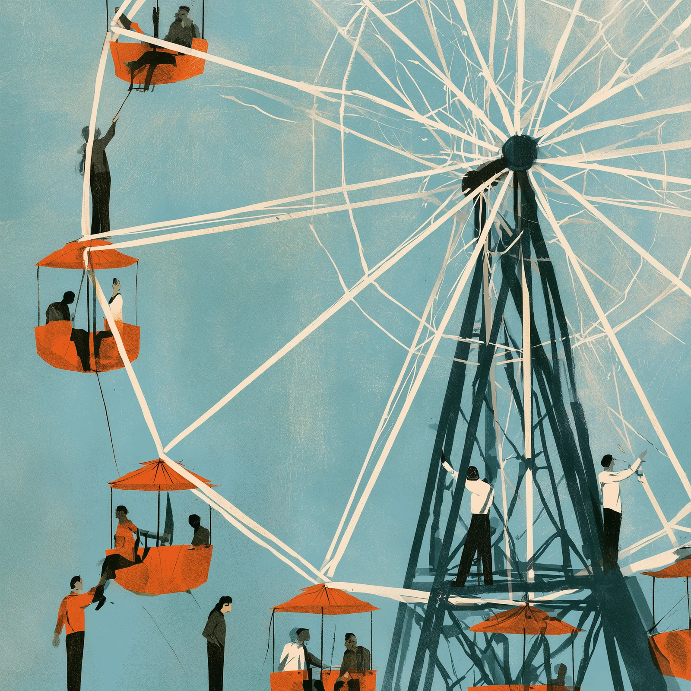

Before we start
Why a framework?
- 01So anyone can climb on, and anyone can climb off.Volunteers come and go. When we all build the same way, a new pair of hands can pick up the work where the last one left it, and the wheel keeps turning.
- 02So every WAAI product feels like one family.One way of building gives the whole WAAI product suite a shared experience, look and feel. Learn your way around one, and you already know the next.
The frame stays true. The riders change. That is the point.